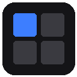
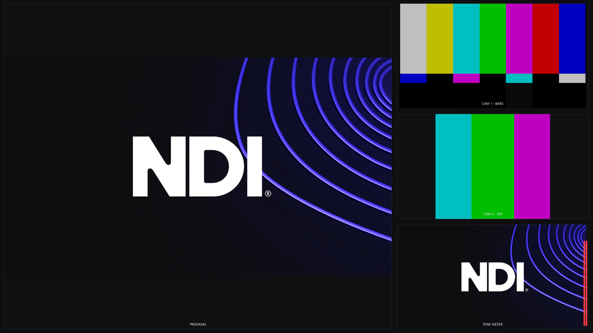
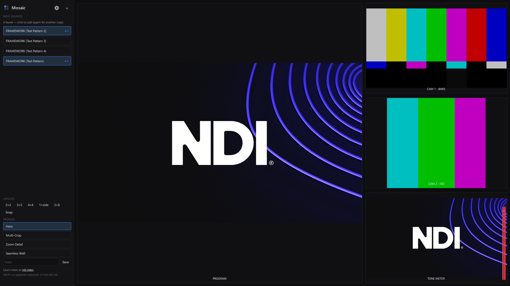
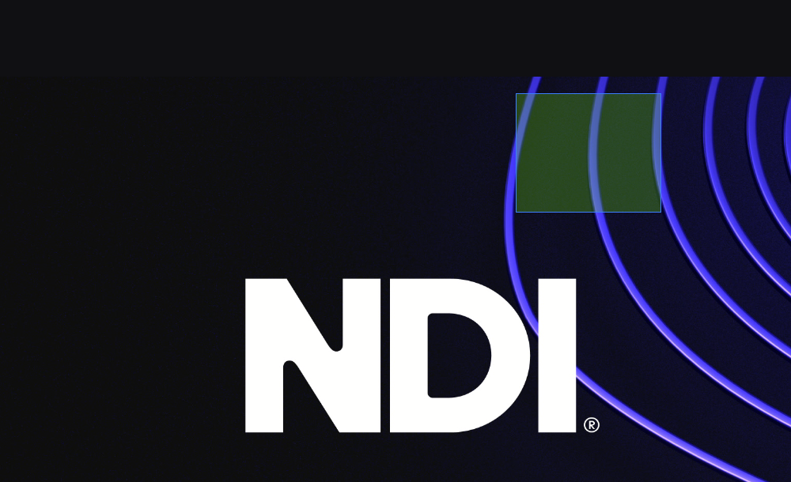
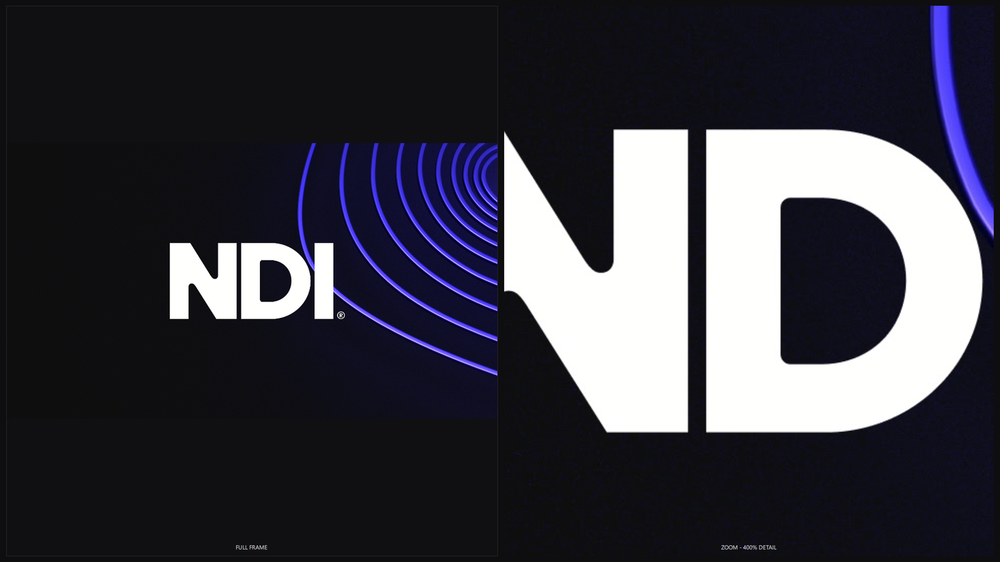
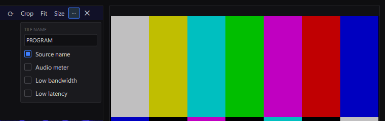
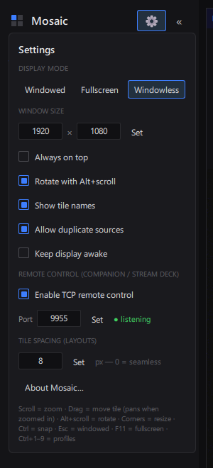

Mosaic v0.6.0
Professional NDI® Multiviewer · User Guide · Cinertia Systems

Mosaic running a four-tile production multiview: program, two ISOs and a tone meter — all live NDI®.
Installation
Windows
- Run
Mosaic-Setup-0.6.0.exe on 64-bit Windows 10 or 11 and follow the wizard. Everything Mosaic needs is included — there is nothing else to install.
- Launch Mosaic from the Start Menu (or the optional desktop icon).
- The first time Mosaic runs, Windows Firewall will ask for network access — click Allow. NDI® discovery and video need it.
macOS
- Open
Mosaic-0.6.0.dmg and drag Mosaic into the Applications folder shortcut beside it. Apple Silicon and Intel Macs are both supported (macOS 12 or newer).
- First launch: right-click Mosaic.app → Open → Open. A plain double-click is blocked the first time because this build is not notarized with Apple; right-click → Open is only needed once.
- When macOS asks "Allow Mosaic to find devices on local networks?" click Allow — NDI® discovery needs it. If missed, enable it later under System Settings → Privacy & Security → Local Network.
Everything in this guide works the same on both platforms. Where a shortcut says Ctrl or Alt, use ⌘ Cmd / ⌥ Option on the Mac.
Quick start
- Add sources — every NDI source on your network appears in the left sidebar automatically. Click one to put it on the canvas; click again to remove it.
- Arrange — click a layout under LAYOUTS (2×2, 3×3, 4×4, 1+side, 2+8, 2+1), or drag tiles wherever you want them.
- Zoom — scroll to zoom into any tile, drag to pan while zoomed, double-click to reset.
- Save a profile — type a name under PROFILES and press Save. Click profile names to switch setups instantly.
- Fullscreen — press F11. Esc returns to windowed.
The main window
Sidebar (left): NDI® sources, layout buttons, canvases (multi-monitor), profiles, and the settings gear ⚙. Collapse it with «; it hides itself in fullscreen and windowless modes — move the mouse to the left screen edge and click » to bring it back.
Canvas: your tiles. Tiles use every pixel — there are no permanent toolbars.
Status bar (hidden): move the mouse to the bottom edge to peek at the selected tile's name, resolution and frame rate.

The main window: sidebar with sources, layouts and profiles on the left; the tile canvas everywhere else.
Working with tiles
Hover a tile to reveal its header:
⟲ ⟳ rotate 90° · Crop drag-select a region · Uncrop remove the crop (shown only while cropped) · Fit fit the picture · Reset undo crop/rotation/zoom · Size exact pixel dimensions · ⋯ options · ✕ close
On a tile too narrow for all buttons, the header collapses to ☰ and ✕ — the ☰ menu offers every action and scrolls on short tiles.
| To do this | Do this |
|---|
| Select a tile | Click it — blue border, comes to the front. The border fades when idle; nudge the mouse to see it again |
| Move a tile | Drag it (anywhere on the picture at normal zoom, or always by its header) |
| Resize a tile | Drag any side or corner — sides resize in one direction, corners resize freely |
| Move the picture inside the tile | Shift+drag it — works at any zoom; double-click resets |
| Snap to grid | Hold Ctrl while moving/resizing, or turn on Snap in LAYOUTS. The grid shows while you drag |
| Zoom | Scroll (or pinch) over the tile — zooms toward the cursor, 10%–3200% |
| Pan while zoomed | Drag the picture |
| Rotate freely | Alt + scroll (2° steps), or use ⟲ ⟳ for 90° |
| Crop | Header → Crop, drag a box over the region. Crops stack; Uncrop removes them |
| Stream status | A red dot appears top-left when a tile loses its live connection to the source (sender closed or off the network). No dot = connected, including static pictures (Settings toggle) |
| Move touching tiles together | Alt+drag a tile — every tile touching it moves as one group |
| Resize touching tiles together | Alt+drag an edge — a shared border moves for every tile on it; an outer edge moves the group's matching edges to the same line |
| Fit the picture | Header → Fit — fits the picture at its current rotation (rotation and crop are kept). Uncropped: also reshapes the tile to the rotated picture's outline, within the tile's footprint. Cropped: keeps the tile's size and shape. A fitted rotated picture stays fitted while the tile is resized |
| Reset the view | Header → Reset undoes crop, rotation, zoom and pan in one click (tile size untouched). Double-click resets zoom/pan only |

Crop mode: drag a box over the video — the tile shows just that region, live.

The same source twice: full frame beside a 400% zoom for focus-critical checks.
Tile options (the ⋯ menu)
| Option | What it does |
|---|
| Tile name | Custom label (e.g. CAM 1 — STAGE LEFT) replacing the source name everywhere. Clear it to go back |
| Source name | Shows the broadcast-style label at the bottom of the tile |
| Audio meter | Stereo peak meters on the tile's right edge (green/yellow/red) |
| Low bandwidth | Receives the NDI proxy stream — ideal for small tiles, big CPU/network savings |
| Low latency | Shows frames the instant they arrive (~a frame less delay, slightly less smooth). For cueing cameras |
| Change source | Switch this tile to any discovered source in place — position, size, options and custom label stay put |

The ⋯ menu: rename the tile and toggle its label, meter, and bandwidth/latency modes.
Duplicate sources: turn on Settings → Allow duplicate sources and each sidebar click adds another copy of the source — for example, several tiles each cropped to a different part of one wide shot. The badge (● 3) counts the copies; remove them with the tile ✕.
Profiles
A profile is a complete setup: which sources are up, the layout, and every tile's zoom, crop, name and options.
- Save: type a name under PROFILES → Save.
- Switch: click a profile — or press Ctrl+1…9. Sources shared between profiles never reconnect, so switching is instant.
- Auto-save: the active (highlighted) profile absorbs every change you make. The Save box is only for creating new profiles.
- Delete: hover a profile, click its ✕.
Mosaic also remembers your last session and restores it on launch — even after a crash or power loss.
Display modes
| Mode | Details |
|---|
| Windowed | Normal resizable window (exact size settable in Settings) |
| Fullscreen | Borderless fullscreen; pick the monitor in Settings. F11 toggles, Esc exits |
| Windowless | Frameless canvas. Drag empty canvas to move it, grab any edge to resize, pair with Always on top |
Your tile arrangement scales proportionally with every mode change, so the layout is preserved.
Multi-monitor canvases
Mosaic can drive more than one display: each canvas is its own window full of tiles — e.g. a producer multiview on your main screen and a clean program/preview wall on the stage-left TV.
- Add a canvas: click + Add under CANVASES. A new window opens ("Output 2", "Output 3", …) — on a second monitor by default when one is connected.
- Canvas targeting: the Canvases buttons choose which canvas sidebar source clicks and Layout presets act on. The blue source dots and the hint line ("→ Output 2") always show where new tiles will land.
- The canvas menu: hover an output's bottom edge and click the ⋯ button — it sits at the bottom so it can never cover a tile's menu. From there: rename the canvas (e.g. STAGE LEFT WALL), Send sources here, the window type (Windowed / Fullscreen / Windowless), an exact size, the monitor picker, and Close.
- Everything is remembered: profiles and the session store each canvas — tiles, name, window type, monitor, position. Switching profiles switches the whole multi-monitor look at once. Canvases not saved in the selected profile stay open unchanged by default (Settings → Keep canvases when switching profiles controls this).
Multi-monitor profiles: add a canvas for each display, set each one fullscreen on its monitor from the ⋯ menu, add sources, then save the result as a profile — one profile (or one Stream Deck button) restores every display at once.
Settings ⚙
| Setting | What it does |
|---|
| Display mode + monitor | Windowed / Fullscreen / Windowless, and which screen fullscreen uses |
| Window size | Set an exact window resolution |
| Always on top | Mosaic floats over other windows |
| Rotate with Alt+scroll | Enable/disable wheel rotation |
| Show tile names | Master switch for all tile labels |
| Allow duplicate sources | Off: clicks toggle a source on/off. On: each click adds another copy |
| Stream status indicators | On (default): red dot on tiles that have lost their live connection to the source |
| Hide mouse when idle | On (default): the cursor disappears over the canvas after 3 s without movement |
| Auto low bandwidth for small tiles | On (default): small tiles automatically receive the lighter NDI® proxy stream — big CPU/network savings on dense grids |
| Keep canvases when switching profiles | On (default): canvases not saved in the selected profile stay open unchanged. Off: they close |
| Keep display awake | Stops Windows from blanking the screen — for unattended operation |
| Check for updates at startup | On (default): asks GitHub once at startup whether a newer release exists; if so, an "Update available" line appears in the sidebar and About dialog. Nothing installs automatically |
| TCP remote control + port | The Stream Deck / Companion interface (default port 9955) |
| Tile spacing | Gap used by layout buttons, 0–64 px. 0 = seamless video wall |
| Shortcuts… | Every keyboard and mouse shortcut, grouped by where it applies |

The settings panel
Hotkeys
The full list is always available in the app under Settings → Shortcuts…, grouped by where each shortcut applies.
| Key | Action |
|---|
| Ctrl+1…9 | Switch to profile 1–9 (sidebar order) |
| F11 | Toggle fullscreen |
| Esc | Cancel crop / close dialogs, then return to windowed |
| Ctrl (held while dragging) | Snap tiles to the grid |
| Shift (held while dragging the picture) | Move the picture inside the tile |
| Alt+drag | Move touching tiles as one group |
| Alt+resize | Touching tiles resize together |
| Alt+scroll | Rotate the video in a tile |
| Double-click | Reset zoom and pan (fitted view) |
Stream Deck & Bitfocus Companion
Turn on Settings → Enable TCP remote control (green dot = listening). If Companion runs on another machine, allow Mosaic through the firewall.
Native module (recommended)
The Cinertia Mosaic Companion module gives you profile dropdowns fed live from Mosaic, ready-made buttons for every profile and layout, a connection-status button (red when the link drops — press it to reconnect), and active-profile feedback: the button for the live profile stays lit no matter how it was switched. Install (Companion 3.5+): web interface → Modules → Import module package → choose cinertia-mosaic-0.1.1.tgz, then add a Cinertia Mosaic connection with Mosaic's IP and port.
Generic TCP (any controller)
Send plain text commands, one per line, to port 9955 — e.g. from Companion's Generic TCP/UDP module:
| Command | Action |
|---|
PROFILE Show A | Switch to a profile by name |
PROFILEINDEX 2 | Switch to the 2nd profile in the list |
LAYOUT 2x2 | Apply a layout (2x2, 3x3, 4x4, 1+side, 2+8) |
MODE fullscreen | windowed / fullscreen / windowless |
PROFILES? · STATUS? · PING | Queries — Mosaic replies, and pushes EVENT lines on every state change |
Notes
- Profiles and settings live in
%APPDATA%\Cinertia Systems\Mosaic\ — copy that folder to move your setups to another machine.
- Each tile is its own NDI receiver. For big walls, use Low bandwidth on small tiles.
- Learn more about NDI® at ndi.video.
What's new
0.6.0 — July 2026
- Fit respects rotation: Fit fits the picture at its current angle, reshaping an uncropped tile to the rotated outline within its footprint. Rotated pictures stay fitted while the tile is resized, and rotating keeps the picture inside the tile.
- Reset button: one click in the tile header undoes crop, rotation, zoom and pan.
- Compact tile header: narrow tiles collapse the button row into a ☰ menu with every action; tile panels fit narrow tiles and scrolling over them no longer zooms the video.
- Update notice (new setting, on by default): Mosaic checks GitHub once at startup and shows a quiet "Update available — Download" line in the sidebar and About dialog when a newer release exists. Nothing installs automatically.
- Shortcuts dialog: every keyboard and mouse shortcut, grouped and readable, under Settings → Shortcuts…
- About dialog: GitHub project link added; NDI® notices grouped at the bottom.
0.5.5 — July 2026
- Stream status indicators (new setting, on by default): a red dot on tiles that have lost their live connection to the source (sender closed or gone from the network); static pictures stay dotless.
- Hide mouse when idle (new setting, on by default): the cursor disappears over the canvas after 3 seconds without movement.
- Alt as the group key: Alt+drag moves touching tiles as one group; Alt+resize moves a shared border for every tile on it, or an outer edge for the whole group.
- 2+1 layout preset: two tiles on top, one large row below — also remote-controllable (LAYOUT 2+1), with a matching Companion module update (0.1.1).
- The settings panel scrolls on small windows.
0.5.0 — July 2026
- Performance release: video pixel-format conversion moved from the CPU to the GPU; small tiles automatically switch to the NDI® proxy stream (new setting, on by default); sources are polled at their own frame rate; unchanged frames are no longer reprocessed. Substantially lower CPU and network use, especially on dense multiview grids.
0.4.5 — July 2026
- Resize from any side: tiles resize by dragging any edge, not only the corners — sides resize in one direction, corners resize freely. Snap-to-grid works on all of them.
- Reposition the picture: Shift+drag moves the video inside the tile frame at any zoom level; double-click or Fit resets it.
0.4.0 — July 2026
- Native macOS version: the full app runs on Apple Silicon and Intel Macs (macOS 12+), rendering through Metal — distributed as
Mosaic-0.5.0.dmg. Keep display awake works on macOS too.
- Fixed: zoomed video could paint over a tile's 1px border; the video is now clipped to its own area on both platforms.
0.3.5 — July 2026
- Uncrop button: removes a tile's crop; appears in the header only while a crop is active. Fit now respects crops — on a cropped tile it keeps the crop and the tile's size, refitting the cropped region inside the tile.
- Keep canvases when switching profiles (new setting, on by default): canvases not saved in the selected profile stay open unchanged instead of closing.
0.3.0 — July 2026
- Multi-monitor canvases: extra output windows, each its own tile canvas with a rename box, window type (Windowed / Fullscreen / Windowless), exact size and monitor picker in its bottom-edge ⋯ menu. Profiles save every canvas.
- Change source in place: swap any tile to another source from its ⋯ menu — position, size and options stay put.
- Fixes: tile resize in windowless mode no longer moves the window; output chrome no longer flickers.
0.2.0 — July 2026
- First public-ready installer. Profiles with auto-save and instant switching, hotkeys, duplicate sources, per-tile options (rename, label, audio meter, low bandwidth, low latency), premade broadcast layouts, keep-display-awake.
- Stream Deck / Bitfocus Companion control: native Cinertia Mosaic module with live profile dropdowns and active-profile feedback, plus a generic TCP protocol.